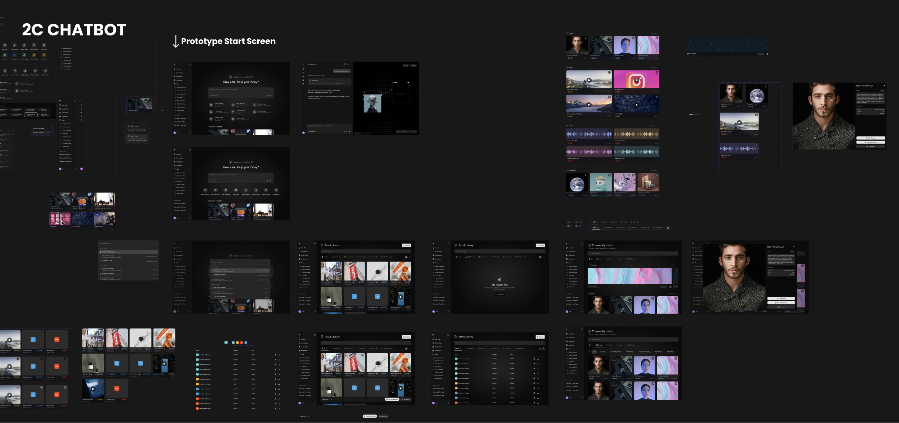
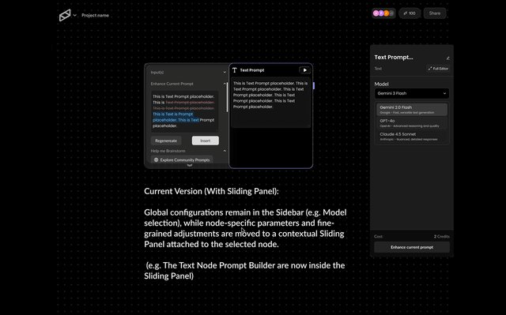
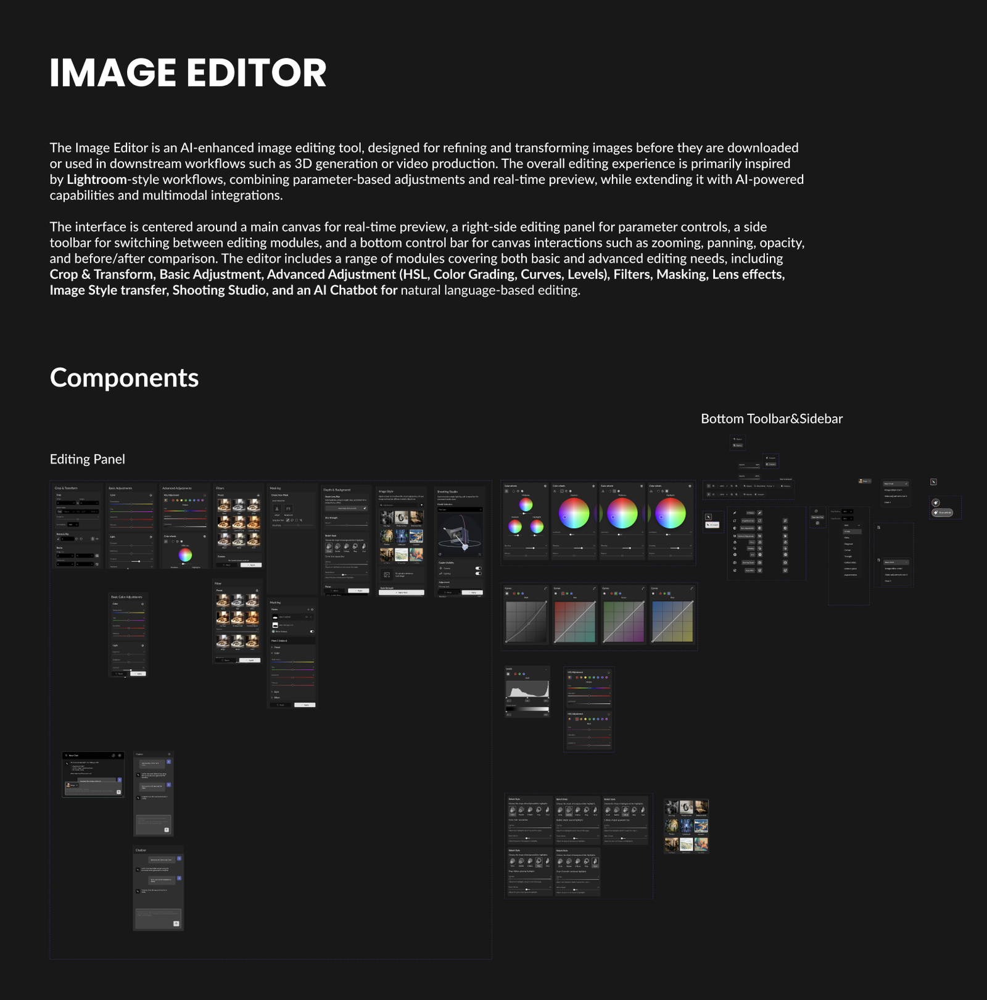
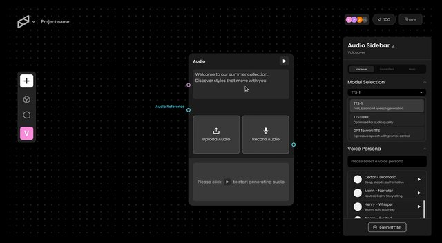
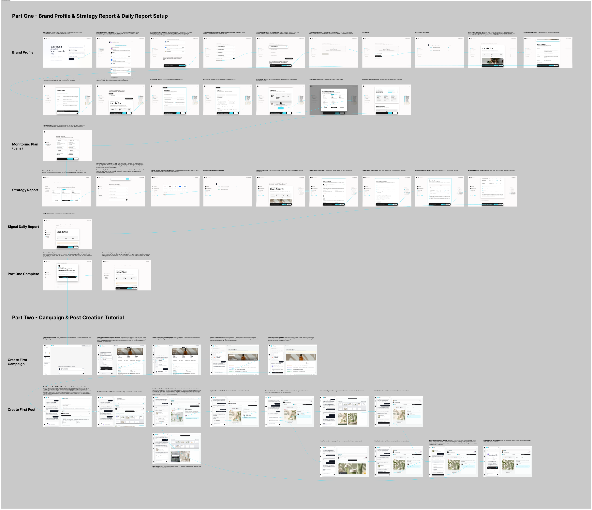
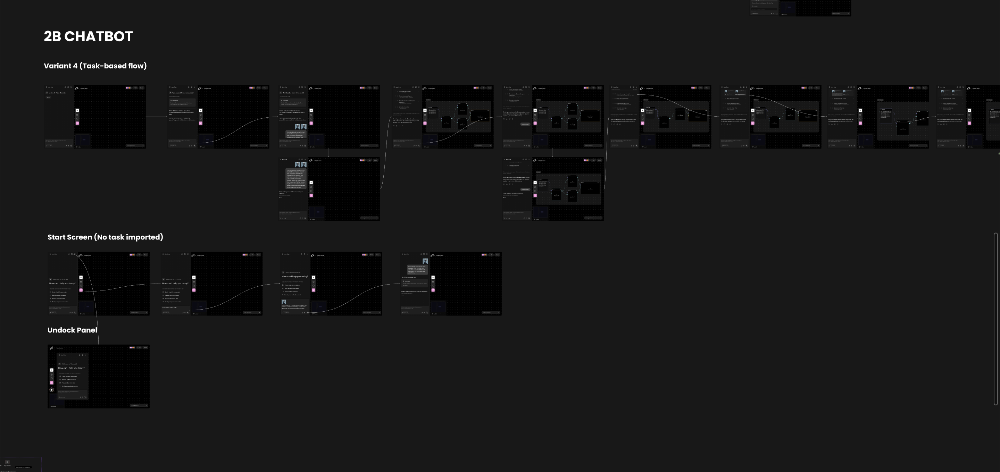
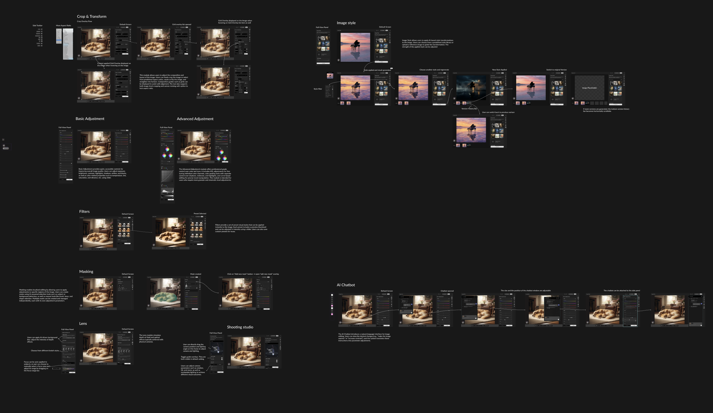
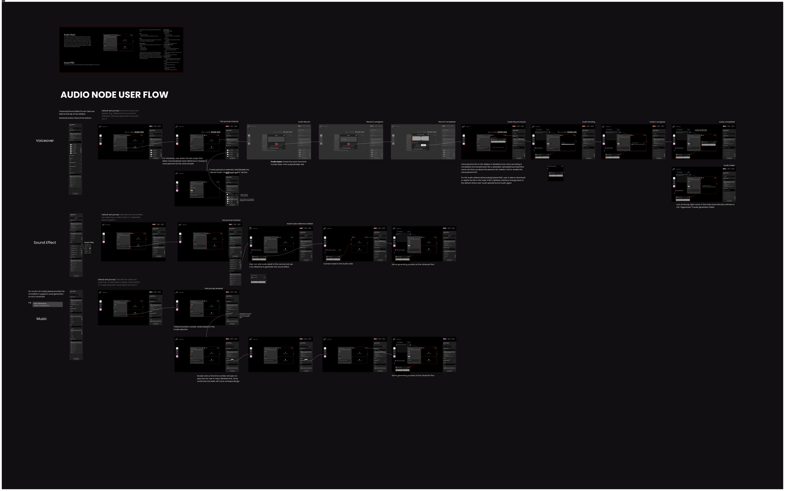

scroll
Year: 2026 – Present | Type: Product Design Internship | Role: Product Designer | Tools: Figma, Claude
Vicino is a startup building AI-powered creative tools that help teams generate, manage, and ship content through node-based creative workflows. As a Product Designer, I worked across the company's AI creative workflow canvas, designing new features that make multi-step AI generation clearer, faster, and more controllable for both everyday creators and professional teams.
Everything shown below I owned end-to-end and individually — from the very first concept and interaction design, all the way through to the final handoff to the development team. My core toolkit was Figma and Claude: I used AI tools like Claude to rapidly build working prototypes and validate interaction ideas, then moved into Figma to refine the UI, states, and micro-interactions into a polished, developer-ready design.
These are the parts of the product I personally owned end-to-end at Vicino — each designed from scratch and handed off to engineering. Here's a quick look at what they are:

Chatbot — B2C & B2B
Conversational generation

Sliding Panel
Quick in-context controls

Image Editor Node
Advanced image refinement

Audio Node
Prompt-to-audio flow

Pulse Onboarding
New-user onboarding
← scroll to browse the features I owned →
How I WorkA consistent end-to-end flow sits behind every feature below — from understanding the requirement to handing engineering a build-ready design.
Receive PRD
Read the PRD to understand the design requirements and constraints.
Draft & Align
Sketch early drafts, then meet with the team to lock the design direction.
Rapid Iteration
Prototype and iterate fast with AI-assisted tooling.
Standup Share
Share progress with other designers at standup and gather feedback.
Finalize
Refine toward a polished, production-ready final design.
Handoff
Deliver detailed handoff docs, user flows, and an HTML prototype for motion.
Our AI creative workflow product needed a chatbot so users could drive generation through natural conversation. I designed the chatbot's UI and interaction model across two distinct audiences — B2C and B2B — each optimized for very different needs.
The B2C interaction is streamlined so that most of what a user wants to generate can be completed in a single back-and-forth with the chatbot — keeping the experience light and conversational.
B2C Chatbot — final result
Instead of generating in one shot, the B2B chatbot first shows the user a generation plan — a main task plus a to-do list — for confirmation. Once approved, it builds out the workflow, and the user can inspect the status of every node and adjust its properties, giving professional teams the precision and transparency they need.

B2B chatbot — UI design (Figma)
B2B Chatbot — final result
Node 2Our earlier product exposed a large number of adjustable properties, all buried in a single property panel on the right side of the canvas — users had to scroll a long way to find the setting they wanted. To fix this, I designed a sliding panel that attaches directly to its node, surfacing the most-used controls for quick, in-context adjustments right where the user is working.
Sliding Panel — final result
Node 3Because Vicino is B2B-facing, users need precise control over the product images they generate. So we proposed an Image Editor node — a standalone node for the manual, advanced refinement of AI-generated images. I owned it end-to-end, studying Lightroom and Photoshop alongside the marketing team's PRD to design its full feature set, UI, and component system from scratch.
The interface centers on a main canvas for real-time preview, a right-side panel for parameter controls, a side toolbar for switching modules, and a bottom bar for zoom, pan, opacity, and before/after comparison.
I designed modules covering both basic and advanced needs — Crop & Transform, Basic & Advanced Adjustment (HSL, Color Grading, Curves, Levels), Filters, Masking, Lens effects, Image Style transfer, Shooting Studio, and an AI Chatbot for natural-language editing.

Full user flow (Figma)
Image Editor Node — final result
Node 4I designed the Audio Node from start to finish — the full flow of entering a prompt, uploading audio, and generating the final output, along with every state and interaction in between.

Full user flow (Figma)
Audio Node — final result
All of these designs were successfully handed off to the development team. The Audio Node and Sliding Panel are already fully implemented and live in the product, while the Chatbot is currently in active development.
Everything above was work on our creative workflow canvas. I'm now designing Pulse — an AI-driven content lifecycle platform for strategy-driven content creation, lifecycle management, and performance analytics. My focus is the onboarding experience, guiding new users into the product from their very first session.
Pulse onboarding — user flow (Figma). Click to view full size.